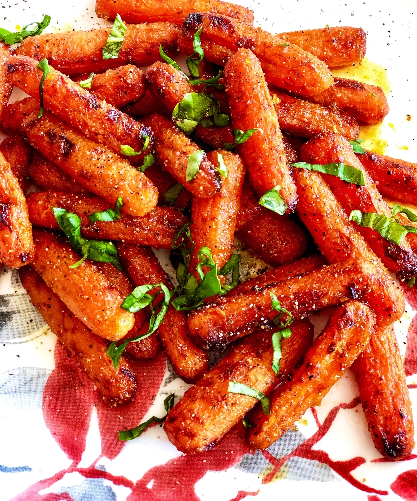

Air Fryer Spicy Roasted Carrots
Air Fryer Roasted Carrots
There's nothing quite as good as roasted carrots. The delicate sweetness combined with the perfect seasoning creates nothing short of vegitable candy.
Yet this candy is actually healthy!The biggest issue with making them, as well as any roasted vegitable, is the mess created with a roasting pan and the
time it takes to do the actual roasting (usually 30+ minutes at 400F.
Our cheat code for these roasted carrots is an air fryer. This amazing device makes it dead simple to do almost anything to do with food and the cleanup is a snap. The convection
properties of the air fryer makes quick work of anything cooked in it, and will take quite a bit less than the usual 30+ minutes a traditional stove would take.
Ingredients (Serves 2)
- Cooking Spray
- 1 Tbs butter, melted
- 1 Tbs hot honey (such as Mike's Hot Honey)
- 1 tsp grated orange zest
- 1/2 tsp ground cardamom
- 1/2 pound baby carrots
- 1 Tbs freshly squeezed orange juice
- 1 pinch salt and gound black pepper to taste
Steps
- Preheat an air fryer to 400 degrees F (200 degrees C). Spray the basket with nonstick cooking spray.
- Combine butter, honey, orange zest, and cardamom in a bowl. Remove 1 tablespoon of the sauce to a separate bowl and set aside. Add carrots to the remaining sauce and toss until all are well coated. Transfer carrots to the air fryer basket.
- Air fry until carrots are roasted and fork tender, tossing every 7 minutes, for 15 to 22 minutes. Mix orange juice with reserved honey-butter sauce. Toss with carrots until well combined. Season with salt and pepper.